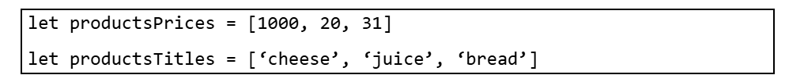

Дано масив, який містить оцінки з К предметів. Знайти середній бал і з’ясувати до якої категорії він відноситься (відмінник, двійочник (має хоча би одну двійку), хорошист (оцінки добре і відмінно), трійочник(є хоча би одна трійка))
Дано масив, який зберігає кількість відвідувачів магазину протягом тижня. Вивести на екран:
Дано масив імен учнів. З’ясувати скільки разів зустрічається ім’я «Іван».
Дано послідовність номерів автомобілів. Підрахувати кількість номерів, які :
Дано послідовність оцінок учня. Підрахувати кількість:
Дано послідовність цін товарів та назв (у окремих масивах). Вивести на екран ті, які може собі дозволити користувач (кількість грошей задається). Приклад збереження даних

Дано послідовність платіжок протягом року. Знайти сумарну кількість грошей за:
Дано одновимірний масив, у якому зберігається певна виграшна сума (елементи заповнюються випадковим чином значеннями від -500 до 500). Надаючи користувачу можливість вибирати номери елементів (поки він не відмовиться). Знаходити сумарний виграш.
Морський бій. Користувач вводить кількість клітинок одновимірного масиву та кількість одиночних кораблів. Комп’ютер довільно розміщує ці одиночні кораблі у масиві по один у клітинці (якщо у клітинці 0, то клітинка пуста, якщо 1 – то це означає, що там є корабель). Користувач вводить номер клітинки, куди стріляє. Гра продовжується до тих пір, поки не будуть потоплені усі кораблі.